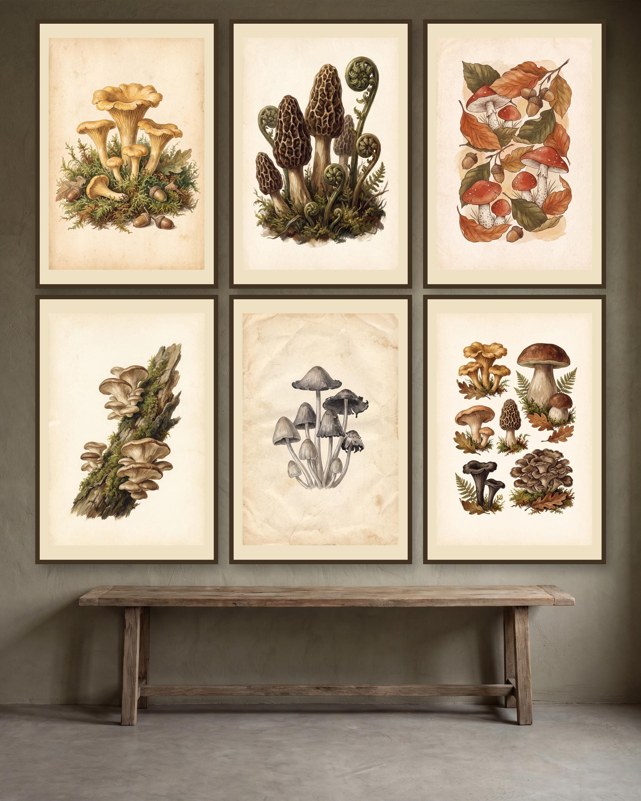

Woodland decorating guide
Vintage Mushroom Botanical Prints: Build a Woodland Fungi Gallery Wall

Vintage mushroom illustrations bring the precision of a natural-history plate and the warmth of woodland decor into one coordinated display. They are especially effective in cottage kitchens, breakfast nooks, garden rooms, studies, reading corners, and guest rooms where viewers can appreciate small cap, stem, and gill details.
Choose a wall that supports close viewing
Botanical artwork rewards inspection, so avoid placing the gallery too high or across a wide room. Above a sideboard, writing desk, low bookcase, or breakfast bench, keep the finished group visually connected to the furniture. Use paper templates cut to the outside dimensions of the intended frames before making holes.
- Above a sideboard: keep the outer gallery edges inside the furniture width.
- In a reading corner: use two columns of three to create a compact vertical feature.
- Along a kitchen wall: keep frames away from steam, grease, sinks, and direct heat.
Build a woodland palette without making the room muddy
Warm cream, parchment, moss, olive, russet, walnut, and muted black complement vintage fungi imagery. Repeat two or three of those colors in textiles or accessories, but leave enough pale wall or mat space around the prints. Walnut and dark oak feel collected and traditional; slim black frames create a cleaner natural-history look.
Arrange six prints as one collection
A balanced two-by-three grid is the safest layout. Keep horizontal and vertical gaps equal, align outer edges, and distribute the darkest or busiest designs rather than clustering them. For a narrow wall, use two columns of three. Above a long console, one row can work if the total width remains comfortably inside the furniture edges.
Place paper templates first and inspect the group from the room entrance and normal seating position. The visual center should relate to eye level, but nearby furniture matters more than a generic measurement.
Plan paper, cropping, and frames together
Measure the actual frame or mat opening and choose the supplied file prepared for that aspect ratio. Never stretch a design to fill a mismatched opening. Review the print-service crop preview around specimen labels, mushroom caps, stems, and page borders. Print one design first if you need to confirm scale, color, and paper.
Matte or lightly textured paper reduces reflections and supports the vintage botanical character. Use the same printer, paper stock, finish, and color settings for all six pieces. Our printing guide explains aspect ratios and local, online, or home printing.
A coordinated vintage mushroom option
The active Vintage Mushroom Botanical Prints listing groups six woodland fungi designs for a cottage kitchen, study, garden room, reading nook, or nature-inspired gallery wall. Consult the live Etsy listing for current availability, price, and exact included files.
View the active Vintage Mushroom Botanical Prints set on Etsy
Seller disclosure: This link opens JTNPrintableCo’s Etsy listing. JTNPrintableCo is the seller and may receive revenue from purchases. Etsy handles checkout and digital delivery; the live listing is the source of truth for current price, availability, and included files.
Understand digital delivery before buying
This is a digital-download-only product. No physical poster, print, frame, mat, plant, or other object is shipped. After Etsy confirms payment, access the files in a web browser, extract any ZIP archive, select the correct ratio, and arrange printing. See digital-download help.
Vintage mushroom wall art FAQ
Where should the collection hang?
Choose a dry wall with comfortable close viewing, such as above a desk, sideboard, low bookcase, or breakfast bench.
Which frames work best?
Walnut, dark oak, slim black, or restrained aged-brass-tone frames complement vintage botanical imagery.
How should six prints be arranged?
Use a two-by-three grid, two vertical columns on a narrow wall, or one row above wide furniture.
Is anything shipped?
No. The linked item is a digital download; printing and framing are arranged by the buyer.
Continue planning a botanical room
Compare the darker cottagecore botanical guide or the natural-science fossil wall art guide, then browse more coordinated gallery-wall sets.